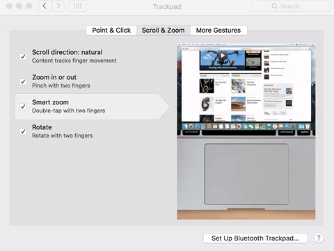
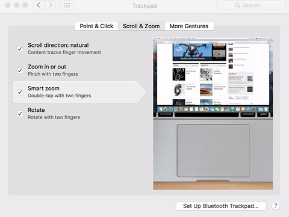

Typical Appearance
Zooming is typically characterized by content growing or shrinking in size. Across all platforms it performs the same function and has the same result, enlarged or smaller content. This component is simple due to its single focus and primary function.
Typical Behavior
Zooming typically involves the magnification or minimiziation of content. Using the zoom function is similar to the real-world action of using a magnifying glass to grow and shrink content.
Events
When zooming in or out of content, typically a zoom event occurs in the background processes.
- A
hoverover the area you want to zoom into, preceeding a two-finger tap or an outward (or inward) motion with two fingers on the trackpad. - A
clickof thecommand+orcommand-keyboard shortcuts to signal a zoom. - On windows machines, holding the
ctrlkey and scrolling upwards/downwards zooms inwards/outwards.
State Diagram

A window is typically in a standby phase before being resized. Once the user begins resizing, either through keyboard shortcut or hand gesture, the window enters the zooming state. Once finished, the window reaches the zoomed state.
Component in Action
Zooming can be initiated in many ways:
- Keyboard shortcuts like
Command+andCommand- - The View section of the menu toolbar (on the top left of a Mac), then either selecting Zoom In, Zoom Out, or Actual Size
- System Preferences > Trackpad > Scroll and Zoom
 
 - System Preferences > Accessibility > Zoom
Variants
Zooming on desktops is possible through the use of the Command+ and Command- keyboard commands, as well as through the view section of the menu toolbar (on the top left of a Mac). Users on laptops and mobile devices, such as tablets and smartphones, can use a pinching motion to zoom out of content and reverse the motion in order to zoom in. . Zooming can also be found in some video games as well. Strategy games, such as Starcraft and Civilization, frequently use zooming to allow users to see individual units/settlements more clearly. Normally in video games the zoom command is the same as in other applications.
Zooming can occur in a few different forms. Window zooming (app-specific zooming) and screen zooming all share many properties, as well as some distinctions. Screen zooming is the magnification of the entire desktop and not one specific application. On Macs it can be done by pressing command-option-8 which, depending on what the user prefers, would either magnify the entirety of the screen to where the pointer is or it would magnify a certain portion of the screen (this is called picture-in-picture). Window zooming would be zooming inside only one particular window of an application. Most applications generally have the same keyboard shortcuts for zooming or accept touchpad commands for zooming but there are sometimes minute differences between how applications allow users to zoom. For example, both Safari and Google Chrome on MacOS accept double tapping, pinching, and pressing command+ to zoom, while Microsoft Word for instance uses different hotkeys to zoom into a page, doesn’t allow pinching, and has a slider at the bottom of the window dedicated to zooming.
Priority Metrics
Since it is a fundamental aspect of modern GUI based operating systems, all priority metrics are vital to this component's design analysis. For desktops, the learnability of zooming in and out is questionable, if the user did not have any prior knowledge that CTRL (for windows) and Command (for Macs) is typically used for keyboard shortcuts, then the user would not learn to use the keyboard command right away.
The user also has the option to zoom in using the window menu, which also has questionable learnability since the option is located within a menu. For smartphones and laptops, the learnability of zooming is much more intuitive. Smartphones and laptops follow the natural mental model by using a compressing motion, pinching, to zoom out and compress the content and making the reverse motion the zoom out. As in the physical world, it is natural to squeeze things, like paper, to compress them and stretch them to expand them.
For desktops, once the user realizes that CTRL / Command is the basis for most keyboard shortcuts, it is easy for users to memorize the zoom shortcut. For laptops and mobile devices, the mental model of for zooming follows the natural way of thinking, making the zoom function simple to remember. Therefore, zooming has a high memorability rating for both desktops and mobile devices. When users initially try to zoom on desktops, the user may make several mistakes. However, the user is likely to make few errors once the keyboard shortcut is known considering the high memorability of the shortcut. Laptop and mobile device users likely make fewer errors while zooming since the method follows the natural mental model and is highly memorable.
Regardless of the device, users can efficiently zoom since the keyboard shortcut and the hand gesture are easily performable actions and garner immediate response and feedback. The utilitarian nature of zooming provides little in the way of user satisfaction, as it is never the primary function of any application and is normally considered a secondary feature for accessibility. The component's utilitarian nature means the lack of satisfaction does not detract from the overall component design but rather makes the product more accessible to all users.
For many of the same reasons that zooming may be considered low in satisfaction, it could be argued that these aspects increase satisfaction for a user when zooming. The uniformity across applications and platforms allows the user to generally accomlish their zooming needs easily, ensuring he or she can resume whatever task required them to zoom in the first place. If a user is hoping to accomplish a task, and requires zooming to do so, than the absense of zooming would likely decrease overall satisfaction with the platform and/or app. This argument could lead one to be in favor of zooming fufilling the satisfaction metric.
Key Characteristics
Key characteristics of zooming include the magnification and shrinking of content. A zoom should not jump to over (or under) magnifying content, but rather should scale either in or out the same distance with every initialization of the zoom. For example, when using keyboard shortcuts to zoom in, every time the Command+ iis done the user should move the same amount inward. No one click should create a drastically different effect in the view. This idea applies to mobile pinch zooming, and trackpad zooming as well. The user should be able to control the amount of zooming that is occurring with each initialization.
An unsatisfactory zoom may jump from the page's actual size to the most-zoomed in view of content. Similarly, an undesirable zoom occurs when, on an IOS, the zoom bounces back after a user has tried to zoom in too far. This normally happens on IOS when the resolution is too low to zoom in any further.
Feedback
With the exception of slow machines, the user receives immediate feedback when zooming. A user is able to watch the change in view of the affected content immediately after they have initialized said change.